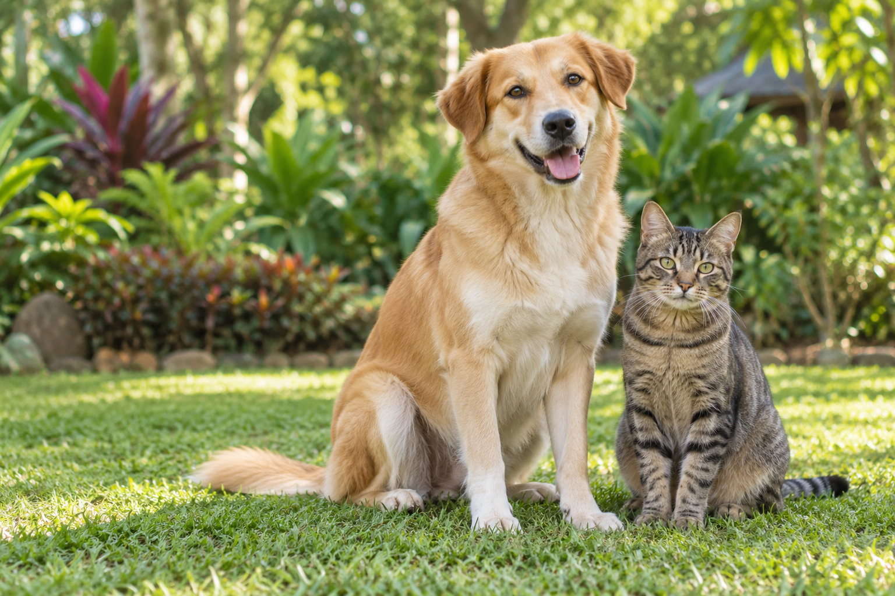

Política pública de protección y bienestar animal
La Ordenanza 49 de 2023 adopta la política departamental y deroga la Ordenanza 61 de 2014.
Leer ordenanza oficial ↗SU VIDA TAMBIÉN TIENE DERECHOS
Entiende qué es el maltrato animal, cuáles son sus consecuencias legales y cómo actuar para protegerlos en Colombia.
Fuentes oficiales · Revisión:

01 / PENAS Y SANCIONES
Estos son los rangos base del régimen de maltrato. Las penas concretas, agravantes y demás consecuencias las determina la autoridad competente con debido proceso.
| Conducta | Prisión | Multa | Otras consecuencias |
|---|---|---|---|
| Sin muerte ni lesión graveRégimen policivo · Ley 84, art. 10 | Vía policivaNo es el tipo penal de lesión grave | 5–50SMLMV | Medidas y procedimiento ante la autoridad policiva competente.Ley 1774, art. 4 ↗ |
| Lesiones gravesÁnimo de maltratar y afectación grave · CP 339C | 20–42meses | 15–30SMLMV | Inhabilidad de 1 a 3 años para ejercer profesión, oficio o comercio relacionado con animales, y prohibición de adquisición y tenencia.Ley Ángel, art. 7 ↗ |
| Muerte por maltratoCódigo Penal · Art. 339A | 32–56meses | 30–60SMLMV | Inhabilidad de 2 a 5 años para ejercer profesión, oficio o comercio relacionado con animales, y prohibición de adquisición y tenencia.Ley Ángel, art. 5 ↗ |
| Acceso carnal a animalesDelito autónomo · CP 339D | 48–55meses | 30–50SMLMV | Inhabilidad de 2 a 4 años para ejercer profesión, oficio o comercio relacionado con animales, y prohibición de adquisición y tenencia.Ley 2627 de 2026, art. 2 ↗ |
Los artículos 339A y 339C se refieren a animales domésticos, amansados, silvestres vertebrados o exóticos vertebrados.
¿Qué significa SMLMV? Salario mínimo legal mensual vigente. Se conservan las unidades de la ley; la liquidación depende del régimen y la fecha aplicables.
Prohibición de tenencia: en el régimen penal dura el doble de la pena principal impuesta y comprende adquirir, tener, cuidar o albergar animales. Es distinta de la inhabilidad profesional. Ley 2455, arts. 3 y 4 ↗
El aumento es de la mitad a tres cuartas partes, según la norma y el caso. Las listas de agravantes son diferentes:
Sevicia; lugar público; utilización o presencia de menores o inimputables; actos sexuales; autor con funciones públicas; difusión que fomente o haga apología del maltrato; explotación económica; daño permanente, mutilaciones o lesiones irreversibles; represalias, venganza o amenazas contra el propietario, tenedor o poseedor del animal; uso de venenos u otras sustancias para dañar a muchos animales o a animales indeterminados; o daños que el animal maltratado cause a otros animales o personas.
Participación de varias personas; varios animales; abuso de confianza por cargo o profesión; espacio público; lucro; repetición sobre el mismo animal; difusión que fomente el delito; sevicia; represalias o coerción; custodia institucional o especial vulnerabilidad del animal.
Grabar evidencia para denunciar no equivale, por sí solo, a promover el maltrato. Consultar Código Penal actualizado ↗
El artículo 339A exceptúa la muerte del animal doméstico destinada al consumo cuando se evita sufrimiento innecesario. El artículo 339B distingue prácticas de buen manejo realizadas conforme a las normas vigentes y acciones de salubridad para controlar brotes epidémicos o enfermedades zoonóticas. El artículo 339D exceptúa procedimientos médicos veterinarios, zootécnicos, de cuidado, diagnóstico, reproducción y productividad en los términos de la ley. Estas reglas no autorizan de manera general a causar sufrimiento.
Las prácticas taurinas y otras actividades tienen normas y decisiones judiciales propias, con periodos de transición. La experimentación científica y las técnicas de reproducción también exigen revisar su regulación.
Son tipos penales diferentes del maltrato. Sus rangos base, sujetos a los elementos de cada delito, son:
La Ley 2480 de 2025 prevé multas de 5 a 20 SMLMV y medidas como amonestación, suspensión, exclusión temporal o definitiva del registro y sellamiento, a cargo de alcaldías municipales o distritales.
Al corte de esta guía aún hay un periodo de adaptación para prestadores existentes: dos años desde el 16 de julio de 2025. La aplicación de registros y requisitos debe leerse con sus plazos y reglamentación.
02 / RECONOCE EL MALTRATO
La ley protege frente a acciones y omisiones que causan sufrimiento. Estas categorías explican los actos de crueldad de la Ley 84 de 1989 y sus reformas.
Golpear, quemar, herir o mutilar sin justificación legal; causar una muerte innecesaria, prolongar la agonía, atropellar intencionalmente o emplear métodos crueles como entierro vivo y ahogamiento. La norma también contempla la muerte de animales con gestación evidente, con sus excepciones legales.
Ley 84, art. 6: a–d, p, r, y, z. La mutilación por mera estética dejó de ser una excepción: Sentencia C-468 de 2024 ↗.
Abandonar un animal doméstico o domesticado bajo propiedad o custodia es un acto de crueldad. También se contemplan el abandono de animales vulnerables o usados en experimentación, la privación de condiciones esenciales que cause daño grave o muerte y el confinamiento que produzca asfixia.
Ley 84, art. 6: j, q, v, x, z.1. El literal z.1 fue añadido por la Ley Ángel, art. 27. Los deberes generales de cuidado también están en el art. 5.
Usar animales físicamente no aptos para carga, tracción, monta o espectáculos; sobrecargarlos hasta la extenuación; o estimularlos con sustancias o procedimientos para competir sin finalidad terapéutica.
Ley 84, art. 6: h, m, t. La tracción animal también tiene un régimen de sustitución en la Ley 2138 de 2021.
Provocar peleas, convertir la tortura en espectáculo, usar animales vivos para entrenar agresividad, utilizarlos como blancos cautivos o producir escenas audiovisuales con daño cruel. El catálogo incluye desollar o desplumar animales vivos y suministrarlos vivos como alimento de otros.
Ley 84, art. 6: e–g, i, k, u. Deben revisarse las reglas especiales, excepciones y transiciones de cada actividad; consulta la Ley 1638 de 2013 y la Ley 2385 de 2024.
Envenenar o intoxicar animales, dejar sustancias perjudiciales al alcance de animales distintos de los que se pretende controlar o usar métodos de captura prohibidos. El literal sobre mallas camufladas contempla supuestos técnicos autorizados que deben revisarse en la norma.
Ley 84, art. 6: l, n, o. Los métodos ilegales de caza y pesca también pueden configurar delitos ambientales.
Prácticas dolorosas sin fines demostrables o sin personas y lugares autorizados; uso de animales de grado zoológico superior al indispensable; y abandono posterior a experimentos. Las pruebas cosméticas tienen reglas específicas en la Ley 2047 de 2020.
Ley 84, art. 6: s, w, x. No toda investigación veterinaria o científica está prohibida; se exige cumplir su regulación.
Desde la Ley 2627 de 2026, el acceso carnal a animales es un delito autónomo. Otros actos sexuales aparecen como agravante de los delitos de maltrato cuando concurren sus elementos. Los procedimientos veterinarios lícitos tienen excepciones expresas.
Código Penal, arts. 339B.d, 339D y 339E. Ley 2627 de 2026 ↗.
Las categorías son explicativas. La gravedad, el resultado y los elementos del caso determinan la vía policiva o penal; una conducta no produce automáticamente una pena de prisión.
03 / CONSULTA LAS FUENTES
Una biblioteca de 26 normas nacionales y territoriales: qué protege cada una, sus artículos relevantes y los matices de su aplicación. Abre una norma para conocer su alcance.
Crea el delito autónomo de acceso carnal a animales y sus circunstancias de agravación. Incluye prohibición de adquisición, tenencia, cuidado y refugio de animales.
Publicada el 24 de agosto de 2026. El rango base es de 48 a 55 meses de prisión y multa de 30 a 50 SMLMV, además de otras penas previstas en la norma.
El Ministerio de Ambiente establece lineamientos para la Ruta de Atención al Maltrato Animal y el Curso de Sensibilización en desarrollo de la Ley Ángel.
Es una resolución reglamentaria, no una ley que cree nuevas penas de prisión.
La Procuraduría insta a las autoridades competentes a cumplir sus obligaciones de protección y bienestar animal en el territorio nacional.
Es una directiva de la Procuraduría; no modifica por sí misma los tipos penales ni sus penas.
Mejora las condiciones de bienestar de perros usados en vigilancia privada e inspección de sustancias u objetos y promueve alternativas tecnológicas y la reducción progresiva de usos no esenciales.
No establece una prohibición inmediata de todo perro en seguridad. Incluye obligaciones de atención, verificación, retiro y reporte de maltrato.
Fortalece la prevención, investigación y sanción del maltrato animal. Actualiza las penas por muerte, crea un delito separado de lesiones graves y reforma el proceso policivo.
Es la referencia central para las penas actuales. Añade el abandono de animales domésticos o domesticados bajo propiedad o custodia al catálogo de actos crueles.
Reconoce las categorías de animales domésticos de compañía y de soporte emocional y establece su inembargabilidad para proteger el vínculo con su núcleo familiar.
La categoría tiene requisitos y exclusiones legales, entre ellas la fauna silvestre o exótica y los casos de provecho comercial en los términos del texto.
Incluye a los animales como destinatarios de medidas de prevención, atención y protección dentro de la política nacional de gestión del riesgo de desastres.
Modifica la Ley 1523 de 2012 y articula responsabilidades de gestión del riesgo con un enfoque de protección, bienestar y salud animal.
Regula los servicios de cuidado de animales de compañía, como guarderías, hoteles, adiestramiento, peluquerías, paseadores y establecimientos similares, para garantizar bienestar y proteger a los usuarios.
Prohíbe collares de pincho y eléctricos durante los servicios regulados y prevé sanciones administrativas por incumplimiento. Su aplicación debe considerar la reglamentación correspondiente. Los prestadores que ya operaban tienen un periodo de adaptación de dos años desde el 16 de julio de 2025 (artículo 21).
Crea el marco de los Centros Regionales de Bienestar Animal para custodia temporal, atención, cuidado y adopción de animales domésticos rescatados o aprehendidos preventivamente.
La operación depende de la organización y cooperación territorial y la disponibilidad financiera. La ley no significa que ya opere un centro en cada municipio.
Integra protección, bienestar animal y conservación de la biodiversidad en la educación ambiental, los proyectos escolares y ciudadanos, la formación docente y el servicio social estudiantil.
Promulgada el 30 de diciembre de 2025. Modifica el artículo 6 de la Ley 2385 de 2024 y respeta la autonomía escolar en los términos de la ley.
Establece medidas para evitar el maltrato animal en corralejas y lineamientos de protección y respuesta a emergencias en estos eventos en Antioquia.
Es una norma departamental que debe aplicarse junto con la legislación nacional y la jurisprudencia vigente. El número se verifica en el texto sancionado.
Crea el Programa Nacional de Esterilización Quirúrgica de Gatos y Perros como medida de protección animal, ambiental y de salud pública.
Incluye líneas especiales de atención. El programa no debe describirse como una orden general de esterilización obligatoria de toda mascota.
Establece una transición hacia la prohibición de corridas de toros, rejoneo, novilladas, becerradas y tientas, con reconversión laboral y cultural.
La prohibición del artículo 3 se activa el 22 de julio de 2027. Otras actividades y sus excepciones tienen reglas y decisiones judiciales específicas, algunas con efectos diferidos hasta el 4 de septiembre de 2028.
Su artículo 31 crea el SINAPYBA para articular políticas, instituciones y acciones de protección y bienestar animal.
Es una disposición del Plan Nacional de Desarrollo. Su ejecución debe sujetarse a las reglas presupuestales y a las competencias de las entidades que lo integran.
Prohíbe el uso de animales para disuadir manifestaciones, motines y asonadas mediante modificaciones al Código de Seguridad y Convivencia.
Su objeto es el uso de animales en esas actividades específicas de control del orden público.
Adopta la Política Pública de Protección y Bienestar de los Animales en Antioquia, orientada a su cuidado como seres sintientes y a la articulación territorial.
Es una norma departamental, no una ley nacional. Deroga la Ordenanza 61 de 2014.
Actualiza delitos ambientales, entre ellos el aprovechamiento ilícito de recursos naturales, el tráfico de fauna, la caza y la pesca ilegal.
El tráfico de fauna y otros delitos ambientales tienen tipos penales propios. No deben confundirse con el delito de maltrato animal, aunque pueden concurrir según los hechos.
Establece parámetros para sustituir vehículos de tracción animal y proteger tanto a los animales como a las personas beneficiarias de la sustitución.
La restricción de circulación está vinculada a la culminación del proceso de sustitución y tiene reglas especiales y decisiones judiciales aplicables. No es una prohibición inmediata de toda tracción animal.
Prohíbe las pruebas en animales de productos cosméticos, sus ingredientes o combinaciones, así como las operaciones comerciales previstas en la ley respecto de esos productos.
Rige desde el 10 de agosto de 2024 y contiene excepciones específicas. No prohíbe toda investigación científica con animales.
Promueve la atención de animales domésticos perdidos, abandonados, rescatados o en riesgo, mediante centros de bienestar y apoyo a refugios y fundaciones.
La implementación territorial considera la capacidad financiera. Sustituye la expresión perros potencialmente peligrosos por perros de manejo especial.
Reconoce a los animales como seres sintientes y define condiciones mínimas de bienestar. Introdujo delitos de maltrato animal y herramientas de protección preventiva.
Las penas originales por muerte y lesiones graves fueron reformadas por la Ley Ángel en 2025; consultar los artículos 339A a 339C del Código Penal. La Ley 2627 de 2026 añadió el delito autónomo de acceso carnal, artículos 339D y 339E.
El Código Nacional de Seguridad y Convivencia regula la relación de las personas con los animales, la tenencia responsable y medidas correctivas. Prohíbe las peleas caninas como espectáculo.
Las medidas correctivas de convivencia tienen un régimen propio, distinto del proceso penal por maltrato. Consultar el texto actualizado y sus reformas.
Prohíbe el uso de animales silvestres nativos o exóticos en espectáculos de circos fijos e itinerantes en todo el país.
La prohibición se refiere a fauna silvestre; su alcance no equivale a prohibir todo uso de animales en cualquier espectáculo.
Contiene los delitos contra la vida e integridad de los animales y los delitos ambientales relacionados con fauna, caza y pesca ilegal.
Consultar el texto consolidado: las leyes 2455 de 2025 y 2627 de 2026 modificaron o añadieron las disposiciones sobre maltrato y violencia sexual.
Establece deberes de cuidado y un catálogo de actos de crueldad. Regula también prácticas de investigación y procedimientos que afectan la vida animal.
Debe leerse con las reformas de las leyes 1774 de 2016 y 2455 de 2025 y la jurisprudencia aplicable. La excepción de mutilación por estética fue declarada inexequible.
Crea las Juntas Defensoras de Animales en los municipios y les encarga promover educación, cuidado y prevención de crueldad y abandono.
Es un antecedente institucional. Las cuantías históricas del texto original no deben confundirse con las sanciones actuales.
No encontramos normas con esos términos. Prueba otra palabra o selecciona “Todas”.
Selección amplia de normas principales de protección y bienestar animal en Colombia, con referencias de Antioquia. No es una compilación exhaustiva de cada decreto, resolución, fallo o norma municipal. Incluye leyes, ordenanzas y disposiciones complementarias identificadas por su clase. Las normas pueden ser reformadas o condicionadas por decisiones judiciales; consulta siempre el texto oficial actualizado. Los proyectos de ley no se presentan como leyes vigentes.
UNA MIRADA AL TERRITORIO
La política departamental y las medidas locales complementan la legislación nacional. La atención y los servicios disponibles dependen del municipio y de la autoridad competente.
Consulta la Gerencia de ProtecciónLa Ordenanza 49 de 2023 adopta la política departamental y deroga la Ordenanza 61 de 2014.
Leer ordenanza oficial ↗Medidas departamentales de protección y respuesta a emergencias en estos eventos, junto con las reglas nacionales aplicables.
Leer ordenanza oficial ↗04 / ACTÚA POR ELLOS
Si conoces un caso, acude al canal que corresponda a los hechos. Esta página orienta y enlaza a las autoridades; no recibe denuncias.
Reúne lugar, fecha, descripción de lo ocurrido y evidencia disponible: fotos, videos o valoración veterinaria.
Ante riesgo inmediato, llama al 123. Si hay posible delito, acude a la Fiscalía. Para maltrato sin lesión grave ni muerte, consulta al inspector de Policía municipal.
Guarda la constancia de tu reporte y aporta la información adicional que solicite la autoridad competente.
RIESGO O SITUACIÓN EN CURSO
Policía Nacional y atención de emergencias.
Consultar orientación de la Policía ↗DENUNCIA DE POSIBLES DELITOS
Desde celular. Línea nacional desde fijo: 018000919748.
Ver canales oficiales de denuncia ↗Más orientación: Ministerio de Justicia · Qué hacer ante maltrato animal ↗
PARA TENERLO CLARO
Sí. La Ley 2455 de 2025 añadió el abandono de animales domésticos o domesticados bajo propiedad o custodia al catálogo de actos crueles de la Ley 84, art. 6, literal z.1. La consecuencia del caso depende de los hechos y del régimen aplicable.
No. La ley diferencia el maltrato sin muerte ni lesión grave del que configura delito. En las lesiones graves se exige el ánimo de maltratar y un menoscabo grave de la salud o integridad física. La clasificación y sanción corresponden a la autoridad.
Al 23 de octubre de 2026 sigue la transición de la Ley 2385 de 2024. La prohibición de su art. 3 comienza el 22 de julio de 2027. Otras actividades tienen reglas y decisiones judiciales específicas; algunas excepciones fueron declaradas inexequibles con efectos diferidos hasta el 4 de septiembre de 2028. Consultar norma y anotaciones ↗.
En la biblioteca, abre una norma y selecciona “Consultar fuente oficial”. Los enlaces llevan a repositorios de entidades públicas. Esta guía resume el contenido; las fuentes oficiales permiten revisar el articulado, sus reformas y anotaciones.